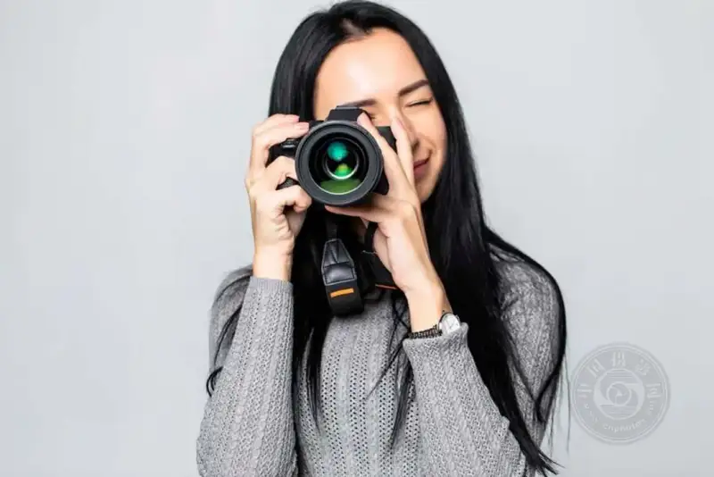
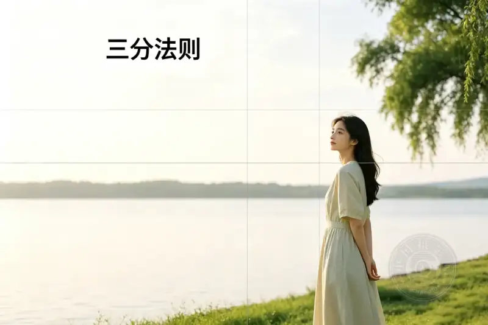
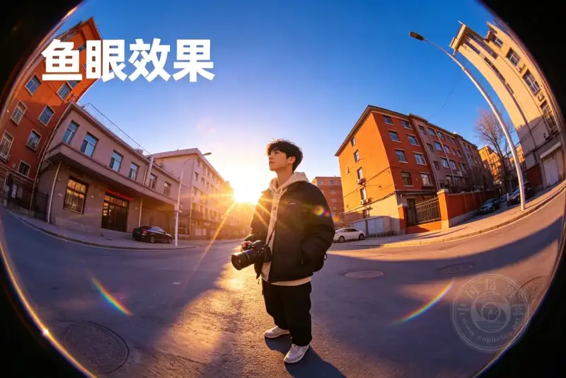

Whether you just picked up a camera or have shot tens of thousands of photos, on the road of photography there are always skills worth studying and practicing again and again.
The 6 skills we cover today mix classic composition rules with a deeper use of camera features. Each one truly helps you take better photos.

01 Rule of thirds: the most basic and the most useful
The rule of thirds is almost every photographer's first teacher.
It is simple. Split the frame into three equal parts along its height and width to make a grid. Then place the subject on a crossing of the grid lines or on a dividing line.
What do you gain? Compared with forcing the subject into the dead center, a slightly off position usually matches the eye's natural viewing habit. The frame then gains a sense of breathing room and story.
For portraits, landscapes, or street shots, build the habit of turning on the grid. The quality of your photos will rise a level at once.

02 Golden triangle: let the lines lead the way
If the rule of thirds suits static scenes, the golden triangle is a composition tool built for motion and lines.
Its core is to build one or more triangular areas in the frame, and let the subject, supporting actors, and background sit along the triangle edges. It suits scenes with diagonal elements, such as a path on a hillside, slanting beams of light, or the pose of a person's arm.
The point is not to force things into a triangle. It is to read the flow of the lines before you shoot, so they meet naturally and guide the eye along a smooth path.
03 Fibonacci spiral: the perfect ratio hidden in nature
The Fibonacci spiral is a curve that unwinds from the center outward. It appears widely in shells, flower petals, and galaxies. When you apply this ratio to photography, the frame carries a natural, harmonious beauty.
To use it, place the main subject at the tightest end of the spiral, and let the other elements stretch outward along the spiral path.
This rule works for a wide-angle shot with one subject, or for a busy scene with many elements to arrange. You can pull the viewer in with a bright patch of sky, or draw the eye to the hero with a dark silhouette.
04 Fisheye effect: a visual game that breaks the rules
A fisheye lens has an ultra-wide view and a signature barrel distortion. It makes an ordinary scene exaggerated and striking. Its greatest value is to break your habitual thinking. When nothing you shoot excites you, put on a fisheye lens and the whole world looks different.
A few tips for using a fisheye:
■ Place the subject in the center, so edge distortion does not hurt the view.
■ Keep the background clean, so extra information does not distract the focal point.
■ Try backlight boldly, because lens flare often brings unexpected color.
Remember, a fisheye is not distortion for its own sake. It serves your creativity.

05 Know your camera modes: from automatic to in control
Many people stay in full auto after they buy a camera. That hands most creative decisions to the machine. Learning to switch modes is the real start of controlling the frame.
■ Auto mode (Auto): leaves everything to the camera. Good for quick grabs, but it can go wrong in hard light such as backlight or night scenes.
■ Program auto (P): the camera sets the exposure, but you freely adjust ISO, white balance, and exposure compensation. It is more flexible.
■ Aperture priority (A/Av): you set the aperture and the camera matches the shutter speed. It suits portraits and still life, and you control the blur.
■ Shutter priority (S/Tv): you set the shutter speed and the camera adjusts the aperture. It suits motion, flowing water, and any scene where you freeze or smear the action.
Know the names and uses of these modes, and your freedom to shoot multiplies.
06 Choose the focus point: give the frame a look
Whether a photo keeps your attention depends largely on where the focus lands. The focus can be the eyes in a portrait, the sunrise on the horizon, or the brightest flower in a bed. It decides what the viewer sees first, and it sets the emotional center of the frame.
The number of focus points varies widely by camera. An entry body may have only a few, while a pro body has dozens or even hundreds. But no matter how many, the most used and most reliable is always the center focus point. It is a cross-type point that reads contrast both horizontally and vertically, so it focuses fast and accurately.
Master the classic move of center focus, half-press the shutter to lock, then reframe. You will find both your speed and your keep-rate rise a lot.
These 6 skills teach you how to see the world, and how to use your tools. Each works alone, and together they support one another.
Photography is, in the end, the shared growth of technique and taste. Technique comes fast, but taste builds over years.
We hope this article gives you some ideas. Next time you go out, pick one or two skills to practice, and you will see real progress.
If you find it useful, share it with friends who also love photography, and shoot more moving work together.
A good photo is never an accident.